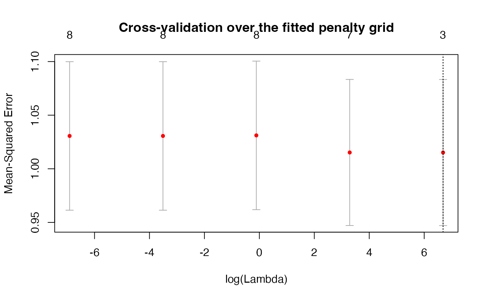
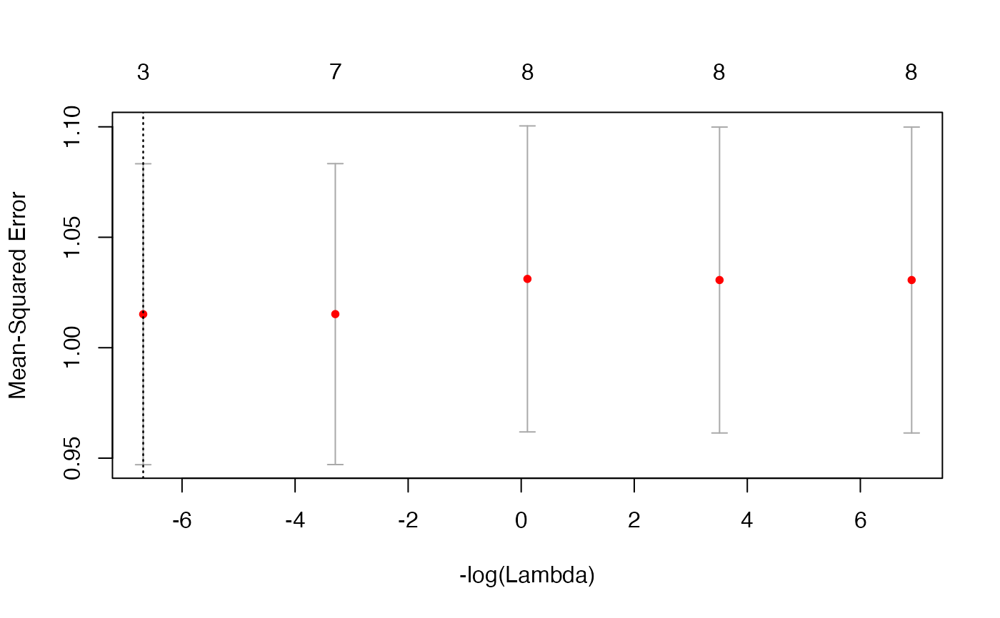

Display validation mean squared error over the fitted penalty grid, with historical error bars, counts of nonzero slopes and both selected penalties.
Usage
# S3 method for class 'cv.rbridge'
plot(x, sign.lambda = 1, ...)Arguments
- x
Fitted CV object returned by
cv.rbridge.- sign.lambda
Horizontal-axis direction. The default
1plotslog(lambda);-1reverses it using-log(lambda). Use positive fitted penalties for the logarithmic axis.- ...
Graphical arguments passed to the initial base-R
plot()call, such asmain,xlab,ylaborylim.
Details
Points show x$cve; bars span x$cvlo to x$cvup.
The bars use the historical cvse calculation described in
cv.rbridge, rather than conventional foldwise standard errors.
The top axis shows full-data nonzero-slope counts, excluding the intercept.
Vertical dotted lines mark lambda.min and lambda.1se;
the lines coincide when both selectors choose the same fitted penalty.
The curve is a diagnostic for the supplied grid and folds; its shape
depends on the data and need not be U-shaped.
Author
Bahadir Yuzbasi
Maintainer: Bahadir Yuzbasi b.yzb@hotmail.com
Examples
# Reproducible synthetic demonstration: 100 observations, eight predictors.
set.seed(2019)
beta <- c(3, 1.5, 0, 0, 2, 0, 0, 0)
p <- length(beta)
beta <- matrix(beta, nrow = p, ncol = 1)
n <- 100
X <- matrix(rnorm(n * p), nrow = n, ncol = p)
y <- as.numeric(X %*% beta + rnorm(n))
# A user-specified sum of standardized slopes: b[1] + b[2] + b[5] = 6.5.
# This target is illustrative; it is not asserted to equal the generating sum.
R1.mat <- matrix(c(1, 1, 0, 0, 1, 0, 0, 0), nrow = 1)
r1.vec <- matrix(6.5, nrow = 1, ncol = 1)
# Five penalties keep this help example fast; the default is 100.
model1 <- cv.rbridge(X, y, q = 1, R = R1.mat, r = r1.vec, nlambda = 5,
nfolds = 3, num_threads = 1)
plot(model1, main = "Cross-validation over the fitted penalty grid")

# Reverse the log-penalty axis without refitting the model.
plot(model1, sign.lambda = -1)
